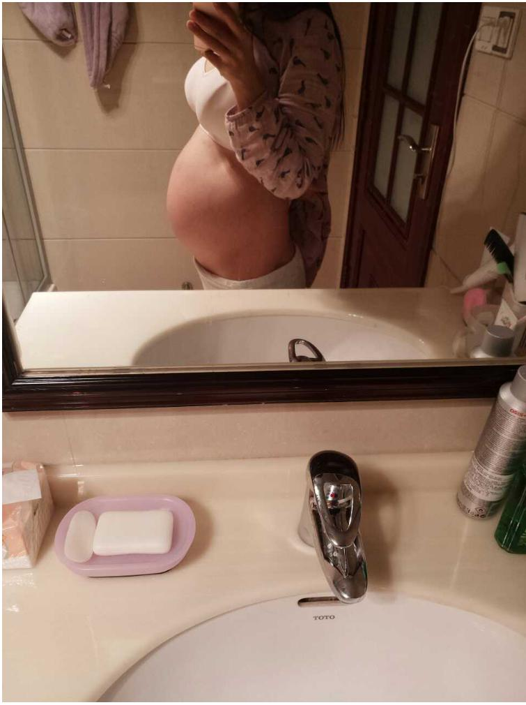
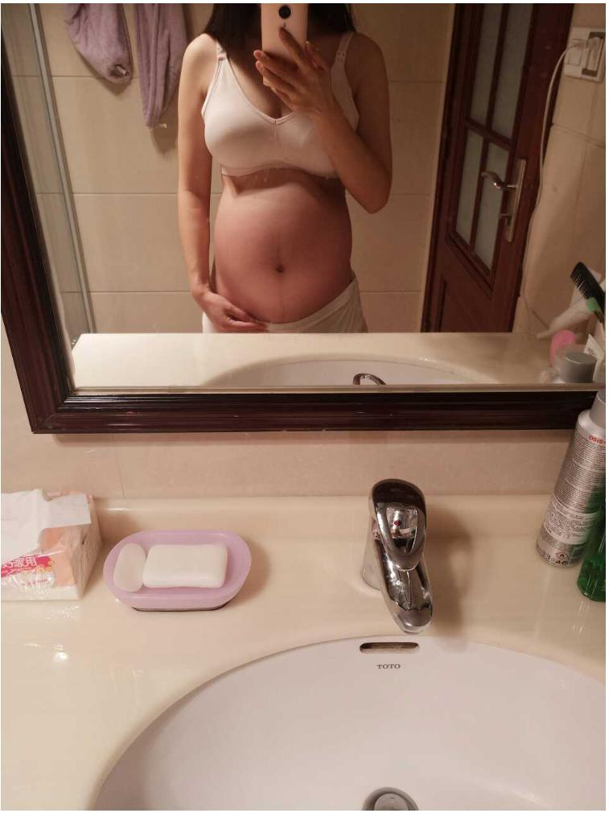

【好孕加油站】厉害了，闺蜜的建议让备孕3年的我成功怀孕！《献给备孕的朋友，真实分享》
楼主基本情况
13年正月初八，我和老公结束了4年的恋爱长跑，幸福降临了，我们终于克服一切结婚了。婚后，我们感情一直很好，因为经历过共同奋斗的历程，我们倍加珍惜对方，每年都拿出时间一起出去旅游，一方面为了增加感情的温度，更重要的是希望能散散心，就是在这种情况下，孩子迟迟不来，我们开始为了要孩子，踏上了漫长的治疗之路......

治疗过程
前面的一年内我都是顺其自然，虽然只有一些月经不调但是也没太在意，只是做了一些基础检查，老公一切正常，我只是内分泌稍微有点失调，雌激素有点点偏低，但是也接近正常范围，听说泡脚，运动啊能助孕，就尝试跟着做了起来，半年又过去了，就下起决心做个全身检查。果然，发现我是多囊卵巢综合征，雌二醇和孕酮有点低外加宫寒。难怪平时到了排卵期就小腹很痛，划重点，如果经常月经不调，排卵期有小腹痛的人就要注意卵巢多囊综合征的问题了，早点知道自己的情况可以避免浪费时间。拖得越久心里会越慌越急。我排卵时期还会有点出血，排出的卵都是带有血的白带样。其实以前我排卵和来月经都不会腹痛的，因为曾经意外怀孕过，和老公结婚条件不成熟，所以选择了 人流，加上那个时候年纪还小，没注意休息受凉了，之后慢慢就开始出现月经不调，排卵期也会有疼痛感，甚至来月经都会腹痛。妇科主任说，我的情况很严重，必须要腹腔镜手术或是介入手术，不然肯定不会怀得上。如果手术后不行，就直接试管吧。我当时想死的心都有了，为什么别人生个孩子那么轻而易举，我却要经历这些磨难。于是我网上翻查了很多资料，也看了很多姐妹们的分享，说不到万不得已千万不要手术，手术造成的伤害，是不可逆转的。很多卵巢多囊、宫寒的姐妹通过灌肠，吃中药，热敷肚脐，可还是怀不上，我也不想轻易试管。

有一次饭局，最好的闺蜜告诉我怀孕了，虽然替她开心，但是心里有很不是滋味，感觉天都要塌了，唯一的战友也抛弃我拥抱成功去了，她也是备孕多年不孕，卵巢多囊，早衰、还有宫寒的症状，她说她也是吃中药调理的，其实开始我也有点怀疑她是不是做试管了，但是她说并不是的，多囊、早衰做试管也难成功。她说她几个朋友都怀孕了，有一个是多囊做了腹腔镜还吃了两年西药加宫寒做了三次试管都失败了，最后喝了一个老中医家祖传秘方怀孕了，生了一个儿子后告诉她的，祖传秘方，我真觉得这事太玄乎，毕竟自己没有经历过。闺蜜叫我考虑考虑试一试，这几年我试过也挺多了，所以有点麻木。就应付地说考虑考虑......
一天晚上，老公喝了酒回来晚了，我有点生气说了他，他说朋友生完娃高兴非要叫他去喝酒吃饭，我心里听见生娃这两个扎心的字，我就跟疯了一样，完全丧失理智，脑子里只有一个念头怀孕!我哭着和闺蜜说了这件事，不知道你们会不会觉得不孕很丢人，我心里是觉得有点自卑的，所以我只有那么一个闺蜜知道我的情况，我们都是不孕的一类人，虽然她怀孕了，但是她深知我的心情，安慰好我，叫我试下她喝的药，她刚好剩下一个月的，虽然症状不那么同，但是死马当活马医，试试吧，我已经处于非理智状态阶段，就拿过来喝了，一个月后她的药就剩5天的了，因为说这个药得月经开始才喝，我就又喝了五天，和以前喝的不同的是不难喝，不知道是什么原因。不过也没任何反应。第一个月我也没想过会怀孕，也不抱希望，想着都吃了一个月，就再试试吧，找到联系方式，症状之类的沟通好，开了十天的药给我，还被批评了一顿，说怎么样也不要喝别人剩下的药，毕竟每个人的情况是有差异的。
好孕归来
第二个月，因为工作很忙，和老公匆匆在一个排卵几天后的下午同了房，并且同房后我就马上去洗澡了，因为觉得错过排卵期应该不可能会怀孕了，接下来的日子都没什么时间同房，一个月就那么一次吧。十多天的药很快就喝完了，我想着再喝一个月，这味道还能接受，想着再开药的时候，老公在边上嘀咕，说我是不是怀孕了，怎么这个月的经期晚了这么多还没来，我说你脑子有坑，同房一次而且错过排卵了怎么可能怀孕，我想着也不至于那么快，才同房十天不到，月经推迟了十天后，就想着用试纸测一下，凌晨五点起来尿尿，一测，下面那个红杠若隐若现，激动的我心里在颤抖，盯着验孕纸两分钟看着它变深，但是可能因为刚怀上所以不是特别深。接着去药房买了两个不同的验孕棒，我的上帝，真的怀了，不怕告诉你们，我激动的一晚上没睡，一直在和老公说孩子的事。。。

这是宝宝怀孕第一次测到的验孕纸和验孕棒，知道后就不停的玩尿，生怕一切都是梦，我真的好开心好幸福。


这是我第八个月的照片

精彩评论

东方女人
 20
20
我就是卵巢多囊伴积水，内分泌紊乱月将不调，做了宫腔镜手术，想试试楼主的方法，希望能尽快怀上，跪求联系方式
昨天
作者回复
希望早日如愿吧，样子老师微信是
nfsq1298

做一个安静的女子
24
我也是吃中药怀的，调理身体不知不觉就怀上了，这一度觉得吃中药会不会对孩子有影响，整天提心吊胆
昨天
作者回复
样子老师家的吗？我吃的过程怀上的，宝宝已经生出来了，很健康的。
做一个安静的女子
有这个老师的联系方式吗？我也是卵巢功能差，双侧堵，看了你的帖子，感觉又有希望了，方便告知一下吗？会对身体有影响吗?
昨天
作者回复
老师那里有好多人你这种情况的，方子都是药食同源的，不会对身体有任何影响的，纯植物配方
刘倩倩
358
用了两个月的来反馈一下：现在白带拉丝有了，卵泡也大了，异味也没有了，强烈安利给你们，真的可以去试试！
昨天
大姐大
265
之前好像在闺蜜家里见到过这个药方，她是有盆腔积液，现在小腹不疼了，孩子也两岁了，看来效果真的不错。
昨天
作者回复
婚后女性很多都有盆腔炎，可惜现在很多人都不重视到后面才肚子疼，怀不上孩子才知道治疗的！
静静
301
加上微信了，观望观望朋友圈再买，我也是通而不畅，宫寒，月经淋漓不尽，很多毛病。
昨天

讲不出再见
22
恭喜我也是上周检查出来一侧不畅，刚刚上一星期的阴道炎的药，医生让灌肠，我准备用楼楼的方子加灌肠一起，希望早点怀上，能告诉我那个老师的联系方式吗
作者回复
亲你加上样子老师问问吧，微信是
nfsq1298
她懂得比我多，很多阴道炎效果都很好呢~
昨天
小五月
87
备孕之前看到这个，还是应该先把宫寒，月经不调调理好再要孩子。
昨天

梦里他乡
34
我闭经一年，跟着这个老师调理，现在怀孕四个多月了，曾经试管失败过三次。
昨天
作者回复
哈哈，准备当妈妈吧~~~~！
俩宝妈妈
167
一直想要个孩子却怀不上， 医生也说不出什么原因，婆婆已经开始嫌弃我了，受不了冷眼旁观的，在哪买？这是名气很大的那个样子老师吗？
昨天
作者回复
对的，就是那个样子老师
流年
239
我女儿是多囊卵巢，用这个老师的方子已经有一段时间了，现在月经来的很规律，比上个月要瘦一点了。要点个赞！
昨天
心尚温
96
这么神奇？还有这种操作？
昨天

空心人
45
怎么买啊？加微信就行？
昨天
作者回复
这是样子老师的微信
nfsq1298
，你有需要可以加上问问。